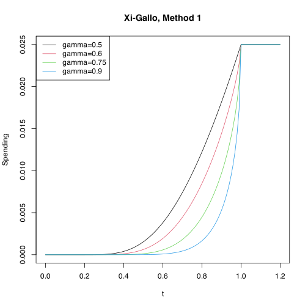
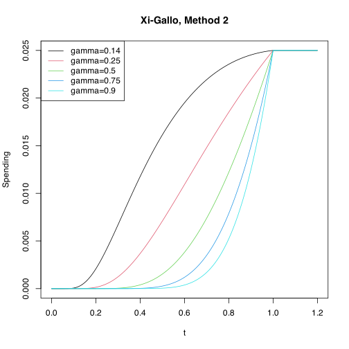
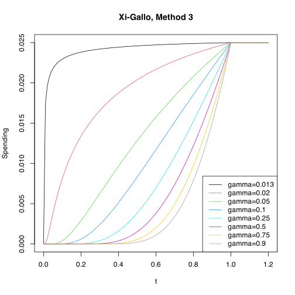

Conditional error spending functions
Source:vignettes/ConditionalErrorSpending.Rmd
ConditionalErrorSpending.RmdIntroduction
We describe conditional error spending functions for group sequential designs. These functions are used to calculate conditional error spending boundaries for group sequential designs using spending functions proposed by Xi and Gallo (2019). Note that for all spending functions, for \(t>1\) we define the spending function as if \(t = 1\). For \(\gamma \in [0, 1]\), we define
\[ z_\gamma = \Phi^{-1}(1 - \gamma) \]
where \(\Phi\) is the standard normal cumulative distribution function.
There are 3 spending functions proposed by Xi
and Gallo (2019), which we will refer to as Method 1
(sfXG1()), Method 2 (sfXG2()), and Method 3
(sfXG3()). When there is a single interim analysis,
conditional error from Method 1 is almost exactly the same as the
parameter \(\gamma\) but it allows a
narrower range of \(\gamma\). Method 2
provides less accurate approximation but allows a wider range of \(\gamma\). Method 3 was proposed to
approximate Pocock bounds with equal bounds on the Z-scale. We replicate
spending function bounds of Xi and Gallo
(2019) along with corresponding conditional error computations
below. We also compare results to other commonly used spending
functions.
Implementation in gsDesign
Method 1
For \(\gamma \in [0.5, 1)\), the spending function is defined as
\[ \alpha_\gamma(t) = 2 - 2\times \Phi\left(\frac{z_{\alpha/2} - z_\gamma\sqrt{1-t}}{\sqrt t} \right). \]
Recalling the range \(\gamma \in [0.5, 1)\), we plot this spending function for \(\gamma = 0.5, 0.6, 0.75, 0.9\).
plot(
pts,
sfXG1(0.025, pts, 0.5)$spend,
type = "l", col = pal[1],
xlab = "t", ylab = "Spending", main = "Xi-Gallo, Method 1"
)
lines(pts, sfXG1(0.025, pts, 0.6)$spend, col = pal[2])
lines(pts, sfXG1(0.025, pts, 0.75)$spend, col = pal[3])
lines(pts, sfXG1(0.025, pts, 0.9)$spend, col = pal[4])
legend(
"topleft",
legend = c("gamma=0.5", "gamma=0.6", "gamma=0.75", "gamma=0.9"),
col = pal[1:4],
lty = 1
)
Method 2
For \(\gamma \in [1 - \Phi(z_{\alpha/2}/2), 1)\), the spending function for Method 2 is defined as
\[ \alpha_\gamma(t)= 2 - 2\times \Phi\left(\frac{z_{\alpha/2} - z_\gamma(1-t)}{\sqrt t} \right) \]
For \(\alpha=0.025\), we restrict \(\gamma\) to [0.131, 1) and plot the spending function for \(\gamma = 0.14, 0.25, 0.5, 0.75, 0.9\).
plot(
pts,
sfXG2(0.025, pts, 0.14)$spend,
type = "l", col = pal[1],
xlab = "t", ylab = "Spending", main = "Xi-Gallo, Method 2"
)
lines(pts, sfXG2(0.025, pts, 0.25)$spend, col = pal[2])
lines(pts, sfXG2(0.025, pts, 0.5)$spend, col = pal[3])
lines(pts, sfXG2(0.025, pts, 0.75)$spend, col = pal[4])
lines(pts, sfXG2(0.025, pts, 0.9)$spend, col = pal[5])
legend(
"topleft",
legend = c("gamma=0.14", "gamma=0.25", "gamma=0.5", "gamma=0.75", "gamma=0.9"),
col = pal[1:5],
lty = 1
)
Method 3
For \(\gamma \in (\alpha/2, 1)\)
\[ \alpha_\gamma(t)= 2 - 2\times \Phi\left(\frac{z_{\alpha/2} - z_\gamma(1-\sqrt t)}{\sqrt t} \right). \]
For \(\alpha=0.025\), we restrict \(\gamma\) to \((0.0125, 1)\) and plot the spending function for \(\gamma = 0.013, 0.02, 0.05, 0.1, 0.25, 0.5, 0.75, 0.9\).
plot(
pts,
sfXG3(0.025, pts, 0.013)$spend,
type = "l", col = pal[1],
xlab = "t", ylab = "Spending", main = "Xi-Gallo, Method 3"
)
lines(pts, sfXG3(0.025, pts, 0.02)$spend, col = pal[2])
lines(pts, sfXG3(0.025, pts, 0.05)$spend, col = pal[3])
lines(pts, sfXG3(0.025, pts, 0.1)$spend, col = pal[4])
lines(pts, sfXG3(0.025, pts, 0.25)$spend, col = pal[5])
lines(pts, sfXG3(0.025, pts, 0.5)$spend, col = pal[6])
lines(pts, sfXG3(0.025, pts, 0.75)$spend, col = pal[7])
lines(pts, sfXG3(0.025, pts, 0.9)$spend, col = pal[8])
legend(
"bottomright",
legend = c(
"gamma=0.013", "gamma=0.02", "gamma=0.05", "gamma=0.1",
"gamma=0.25", "gamma=0.5", "gamma=0.75", "gamma=0.9"
),
col = pal[1:8],
lty = 1
)
Replicating published examples
We replicate spending function bounds of Xi and Gallo (2019) along with corresponding conditional error computations. We have two utility functions. Transposing a tibble and a custom function to compute conditional error.
# Custom function to transpose while preserving names
# From https://stackoverflow.com/questions/42790219/how-do-i-transpose-a-tibble-in-r
transpose_df <- function(df) {
t_df <- data.table::transpose(df)
colnames(t_df) <- rownames(df)
rownames(t_df) <- colnames(df)
tibble::as_tibble(tibble::rownames_to_column(.data = t_df))
}
ce <- function(x) {
k <- x$k
ce <- c(gsCPz(z = x$upper$bound[1:(k - 1)], i = 1:(k - 1), x = x, theta = 0), NA)
t <- x$timing
ce_simple <- c(pnorm((last(x$upper$bound) - x$upper$bound[1:(k - 1)] * sqrt(t[1:(k - 1)])) / sqrt(1 - t[1:(k - 1)]),
lower.tail = FALSE
), NA)
Analysis <- 1:k
y <- tibble(
# Analysis = Analysis,
Z = x$upper$bound,
"CE simple" = ce_simple,
CE = ce
)
return(y)
}Method 1
The conditional error spending functions of Xi and Gallo (2019) for Method 1 and Method 2 are designed to derive interim efficacy bounds with conditional error approximately equal to the spending function parameter \(\gamma\). The conditional probability of crossing the final bound \(u_K\) given an interim result \(Z_k=u_k\) at analysis \(k<K\) under the assumption of no treatment effect is
\[ p_0(Z_K\ge u_K|Z_k=u_k) = 1 - \Phi\left(\frac{u_K - u_k\sqrt t}{\sqrt{1-t}}\right). \]
Conditional rejection probabilities accounting for all future analyses as well as under any assumed treatment effect are explained further in the gsDesign technical manual. We will see that where there are future interim analyses below, the conditional error for crossing at least one future efficacy bound is substantially greater than the simple conditional error ignoring future interims.
We will compare the Method 1 conditional error spending functions of
Xi and Gallo (2019) with O’Brien-Fleming
bounds (sfu = "OF"), exponential spending
(sfu = sfExponential), and the Lan-DeMets spending function
to approximate O’Brien-Fleming bounds (sfu = sfLDOF). The
O’Brien-Fleming bounds are specifically known to the 0.5 (simple)
conditional error as seen in the table below. The exponential spending
function provides the closest approximation of O’Brien-Fleming bounds
with a parameter of 0.76; this was suggested previously by Anderson and Clark (2010). The other Method 1
spending functions generally have higher than the targeted simple
conditional error; thus, if you wish to use a particular conditional
error at bounds, it may be better to see if a smaller \(\gamma\) than the targeted conditional
error provides a better match.
xOF <- gsDesign(k = 4, test.type = 1, sfu = "OF")
xLDOF <- gsDesign(k = 4, test.type = 1, sfu = sfLDOF)
xExp <- gsDesign(k = 4, test.type = 1, sfu = sfExponential, sfupar = 0.76)
x1.8 <- gsDesign(k = 4, test.type = 1, sfu = sfXG1, sfupar = 0.8)
x1.7 <- gsDesign(k = 4, test.type = 1, sfu = sfXG1, sfupar = 0.7)
x1.6 <- gsDesign(k = 4, test.type = 1, sfu = sfXG1, sfupar = 0.6)
x1.5 <- gsDesign(k = 4, test.type = 1, sfu = sfXG1, sfupar = 0.5)
xx <- rbind(
transpose_df(ce(xOF)) |> mutate(gamma = "O'Brien-Fleming"),
transpose_df(ce(xExp)) |> mutate(gamma = "Exponential, nu=0.76 to Approximate O'Brien-Fleming"),
transpose_df(ce(xLDOF)) |> mutate(gamma = "Lan-DeMets to Approximate O'Brien-Fleming"),
transpose_df(ce(x1.5)) |> mutate(gamma = "gamma = 0.5"),
transpose_df(ce(x1.6)) |> mutate(gamma = "gamma = 0.6"),
transpose_df(ce(x1.7)) |> mutate(gamma = "gamma = 0.7"),
transpose_df(ce(x1.8)) |> mutate(gamma = "gamma = 0.8")
)
xx |>
lt() |>
lt_group(~ gamma, sep = TRUE, sort = FALSE) |>
lt_spanner(label = "Analysis", columns = 2:5) |>
lt_format(columns = 2:5, decimals = 3) |>
lt_label(rowname = "") |>
lt_header(
title = "Xi-Gallo, Method 1 Spending Function",
subtitle = "Conditional Error Spending Functions"
) |>
lt_footnote(
"Conditional Error not accounting for future interim bounds.",
where = "body", columns = "rowname", rows = seq(2, 20, 3)
) |>
lt_footnote(
"CE = Conditional Error accounting for all analyses.",
where = "body", columns = "rowname", rows = seq(3, 21, 3)
)Method 2
Method 2 provides a wider range of \(\gamma\) values targeting conditional error at bounds. Again, choice of \(\gamma\) to get the targeted conditional error may be worth some evaluation.
x1.8 <- gsDesign(k = 4, test.type = 1, sfu = sfXG2, sfupar = 0.8)
x1.7 <- gsDesign(k = 4, test.type = 1, sfu = sfXG2, sfupar = 0.7)
x1.6 <- gsDesign(k = 4, test.type = 1, sfu = sfXG2, sfupar = 0.6)
x1.5 <- gsDesign(k = 4, test.type = 1, sfu = sfXG2, sfupar = 0.5)
x1.4 <- gsDesign(k = 4, test.type = 1, sfu = sfXG2, sfupar = 0.4)
x1.3 <- gsDesign(k = 4, test.type = 1, sfu = sfXG2, sfupar = 0.3)
x1.2 <- gsDesign(k = 4, test.type = 1, sfu = sfXG2, sfupar = 0.2)
xx <- rbind(
transpose_df(ce(x1.2)) |> mutate(gamma = "gamma = 0.2"),
transpose_df(ce(x1.3)) |> mutate(gamma = "gamma = 0.3"),
transpose_df(ce(x1.4)) |> mutate(gamma = "gamma = 0.4"),
transpose_df(ce(x1.5)) |> mutate(gamma = "gamma = 0.5"),
transpose_df(ce(x1.6)) |> mutate(gamma = "gamma = 0.6"),
transpose_df(ce(x1.7)) |> mutate(gamma = "gamma = 0.7"),
transpose_df(ce(x1.8)) |> mutate(gamma = "gamma = 0.8")
)
xx |>
lt() |>
lt_group(~ gamma, sep = TRUE, sort = FALSE) |>
lt_spanner(label = "Analysis", columns = 2:5) |>
lt_format(columns = 2:5, decimals = 3) |>
lt_label(rowname = "") |>
lt_footnote(
"Conditional Error not accounting for future interim bounds.",
where = "body", columns = "rowname", rows = seq(2, 20, 3)
) |>
lt_footnote(
"CE = Conditional Error accounting for all analyses.",
where = "body", columns = "rowname", rows = seq(3, 21, 3)
) |>
lt_header(
title = "Xi-Gallo, Method 2 Spending Function",
subtitle = "Conditional Error Spending Functions"
)Method 3
Method 3 spending functions are designed to approximate Pocock bounds with equal bounds on the Z-scale. Two common approximations used for this is the Hwang et al. (1990) spending function with \(\gamma = 1\)
\[ \alpha_{HSD}(t, \gamma) = \alpha\frac{1-e^{-\gamma t}}{1 - e^{-\gamma}}. \]
and the Lan and DeMets (1983) spending function to approximate Pocock bounds
\[ \alpha_{LDP}(t) = \alpha \log(1 +(e -1)t). \]
We compare these methods in the following table. While the \(\gamma = 0.025\) conditional error spending bounds are close to the targeted Pocock bounds, the \(\gamma = 0.05\) conditional error spending bound is substantially higher than the targeted value at the first interim. The traditional Lan-DeMets and Hwang-Shih-DeCani approximations are quite good approximations of the Pocock bounds. The one number not reproduced from Xi and Gallo (2019) is the conditional error at the first analysis for \(\gamma = 0.05\); while here we have computed 0.132, in the paper this value was 0.133. There are differences in the computation algorithms that may account for this difference. The method used in gsDesign is from Chapter 19 of Jennison and Turnbull (2000), specifically designed for numerical integration for group sequential trials. The method used in Xi and Gallo (2019) is a more general method approximating multivariate normal probabilities.
xPocock <- gsDesign(k = 4, test.type = 1, sfu = "Pocock")
xLDPocock <- gsDesign(k = 4, test.type = 1, sfu = sfLDPocock)
xHSD1 <- gsDesign(k = 4, test.type = 1, sfu = sfHSD, sfupar = 1)
x3.025 <- gsDesign(k = 4, test.type = 1, sfu = sfXG3, sfupar = 0.025)
x3.05 <- gsDesign(k = 4, test.type = 1, sfu = sfXG3, sfupar = 0.05)
xx <- rbind(
transpose_df(ce(xPocock)) |> mutate(gamma = "Pocock"),
transpose_df(ce(xLDPocock)) |> mutate(gamma = "Lan-DeMets to Approximate Pocock"),
transpose_df(ce(xHSD1)) |> mutate(gamma = "Hwang-Shih-DeCani, gamma = 1"),
transpose_df(ce(x3.025)) |> mutate(gamma = "gamma = 0.025"),
transpose_df(ce(x3.05)) |> mutate(gamma = "gamma = 0.05 ")
)
xx |>
lt() |>
lt_group(~ gamma, sep = TRUE, sort = FALSE) |>
lt_spanner(label = "Analysis", columns = 2:5) |>
lt_format(columns = 2:5, decimals = 3) |>
lt_label(rowname = "") |>
lt_footnote(
"Conditional Error not accounting for future interim bounds.",
where = "body", columns = "rowname", rows = seq(2, 11, 3)
) |>
lt_footnote(
"CE = Conditional Error accounting for all analyses.",
where = "body", columns = "rowname", rows = seq(3, 12, 3)
) |>
lt_header(
title = "Xi-Gallo, Method 3 Spending Function",
subtitle = "Conditional Error Spending Functions"
)Summary
Xi and Gallo (2019) proposed conditional error spending functions for group sequential designs are implemented in the gsDesign package. When there is a single interim analysis, conditional error from Method 1 is almost exactly the same as the parameter \(\gamma\) but it allows a narrower range of \(\gamma\). Method 2 provides less accurate approximation but allows a wider range of \(\gamma\). Using \(\gamma = 0.5\) replicates the Lan-DeMets spending function to approximate O’Brien-Fleming bounds. An exponential spending function provides a possibly better approximation of O’Brien-Fleming bounds. Simply selecting a smaller \(\gamma\) than the targeted conditional error may provide a better match for the targeted bounds. While Method 3 provides a reasonable approximation of a Pocock bound with equal bounds on the Z-scale, its stated objective, traditional approximations of Pocock bounds with the Lan-DeMets and Hwang-Shih-DeCani spending functions may be slightly better.
Results duplicated findings from the original paper.